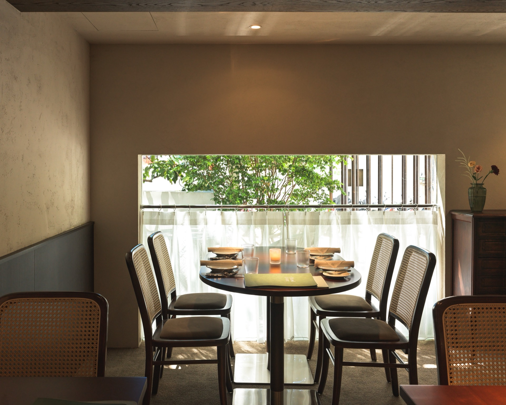
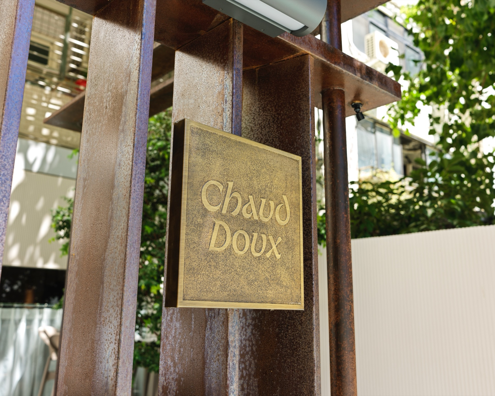
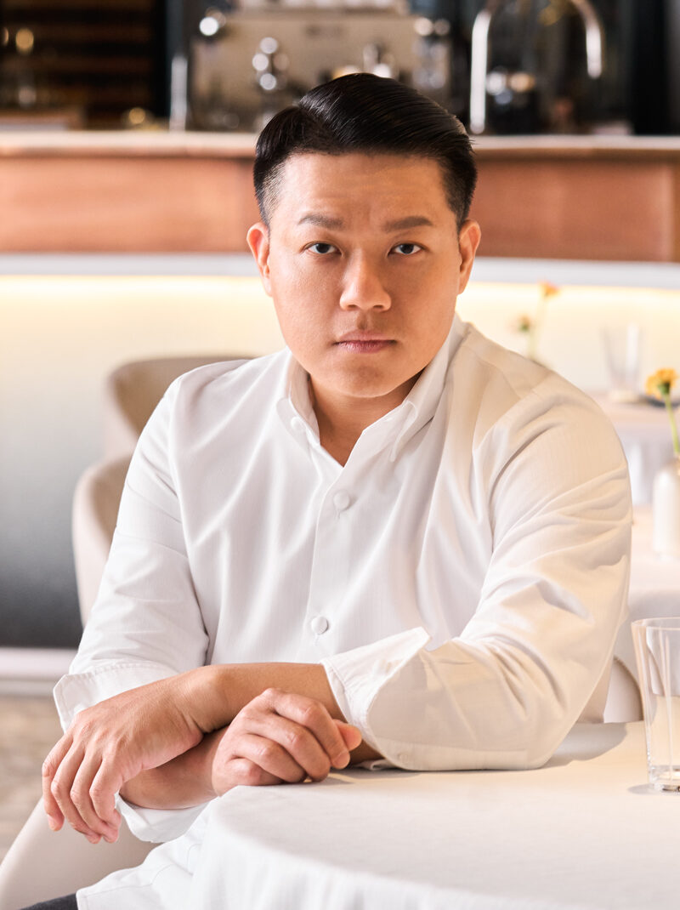
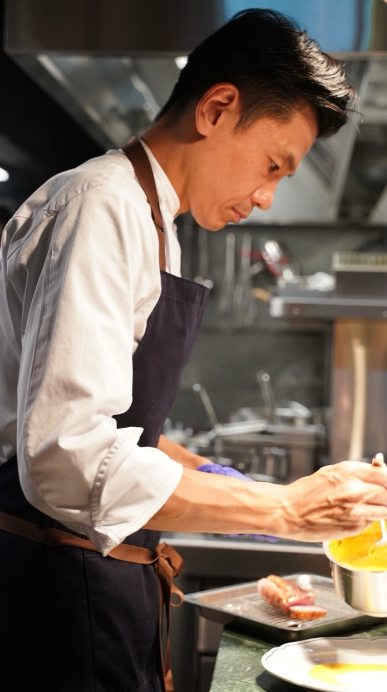
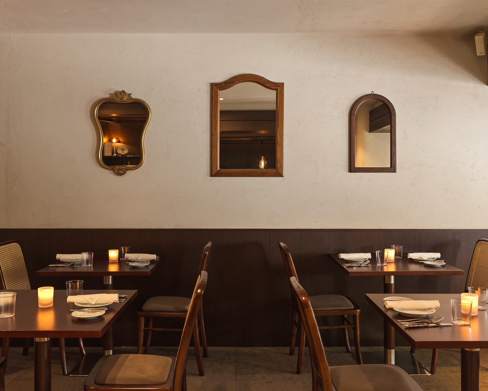
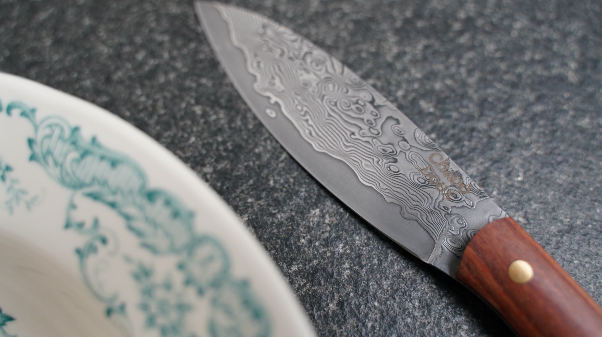

法文裡，Chaud 是溫暖，Doux 是溫柔。這兩個字合起來，唸起來也神似台語的「相堵」——意指相遇。我們想像這裡是一個會不小心走進來、卻捨不得離開的地方。
從料理到待客，「溫暖做菜，溫柔待人」不是一句口號，而是每天在這間小餐館裡，具體發生的事。
兩位主廚，一段從米其林餐桌延伸到台北日常的旅程。

態芮 Taïrroir 米其林三星主廚，監製 Chaud Doux 的整體料理方向與品味標準，確保每一道菜都經得起反覆品嚐。

畢業於里昂保羅・博古斯廚藝學院，旅法期間歷練多家米其林星級餐廳。返台後歷經君品酒店、松露之家、台北文華東方酒店 Café de Lugano，2025 年加入嘉林餐旅集團，擔任 Chaud Doux 主廚，以里昂 Bouchon 小館文化為靈感，帶領團隊回歸法式餐桌本質。

設計延續「溫暖溫柔」的核心：米白紋理牆面、深色胡桃木家具、藤編椅、墨綠絲絨卡座，搭配銅製吊燈與復古鏡框——每個角落都經得起多看幾眼。
這裡也是 2026 米其林指南台灣新入選的餐廳，同時擁有自己的甜點主廚與侍酒師，從前菜到餐後酒，都有人為你把關。
看菜單
以雞翅木與紅檀木手工打造的牛排刀，刀身雕刻著傳統細膩的大馬士革花紋，低調卻蘊含深厚質感，象徵料理之外的匠心傳承。
搭配精心挑選的法式花盤，讓每一道佳餚不僅在味覺上層層堆疊，也在視覺與觸覺間傳遞細膩——從刀叉器皿到桌上擺設，邀請賓客獲得多重感官的完整體驗。